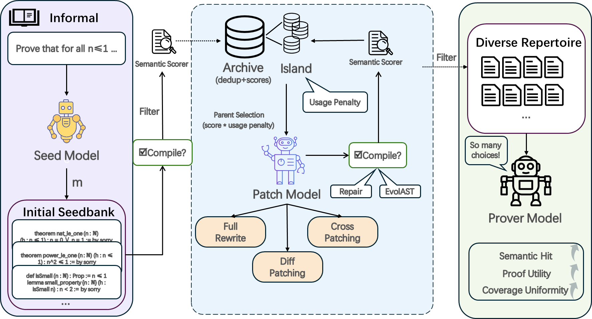
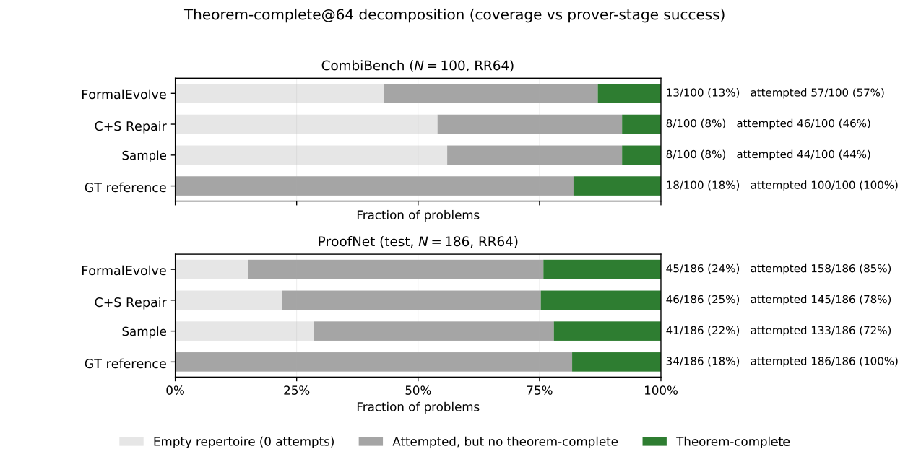

Generates Lean 4 autoformalizations via compile-gated evolutionary search, using Lean compilation as a feasibility gate and evaluating downstream Lean proving.
Abstract
Autoformalization aims to produce formal statements that compile and faithfully preserve the intended meaning of informal mathematics. Yet standard single-output evaluation collapses this many-to-many structure into a single prediction. For downstream proving, this granularity is too coarse: a formal statement is not merely a faithful translation endpoint, but also a prover-facing interface whose structure can alter proof search under a fixed budget. We therefore recast autoformalization as budgeted test-time search: FormalEvolve maintains a compilation-feasible archive for reuse and returns a deduplicated, semantically accepted repertoire for evaluation and downstream proving. It expands the archive with LLM-driven mutation, crossover, bounded patch repair, and symbolic abstract syntax tree (AST) rewrites for structural diversity. Under a generator-call budget of T=100 with a fixed LLM semantic judge, FormalEvolve reaches SH@100 of 58.0% on CombiBench and 84.9% on ProofNet, improving over all no-archive controls while reducing the cross-problem concentration of semantic successes. Under a fixed B=64 prover budget, these repertoires improve theorem-complete proving over the matched no-archive control. Additional stronger-base statement-generation experiments show that archive-search gains persist with stronger seed and repair models.
Problem
Autoformalization is many-to-many: one informal theorem admits several faithful Lean statements. These variants can behave very differently under a fixed prover budget, so producing a single output discards variation that matters for proving.
Approach
FormalEvolve treats Lean 4 autoformalization as budgeted test-time search. It keeps an archive of candidates that pass Lean compilation and expands it with LLM-driven mutation, crossover, bounded patch repair, and symbolic AST rewrites (EvolAST). An LLM semantic judge filters the archive into a deduplicated repertoire. This repertoire is used both for evaluation and for downstream proving under a fixed prover budget.

Figure 2: Framework overview of FormalEvolve. A seed model produces an initial seedbank (debited as generator calls) that initializes a compilation-feasible archive. Candidates are stored with semantic scores and selected with usage penalties; a patch model proposes edits (full rewrite, diff patching, and cross patching) and triggers bounded repair or EvolAST fallbacks on duplicate proposals and c
Results
At a budget of T=100 generator calls, FormalEvolve reaches SH@100 of 58.0% on CombiBench and 84.9% on ProofNet. This improves over all no-archive controls and lowers the Gini concentration of semantic successes across problems. Under B=64 prover attempts, it also improves theorem-complete proving over the matched hybrid control.

Figure 6: Decomposing theorem-complete@64 under a fixed prover and attempt budget ( B{=}64 ). Each bar splits the benchmark denominator into problems with an empty statement repertoire for proving (zero prover attempts), problems with a non-empty repertoire but no theorem-complete success, and problems with at least one theorem-complete success.